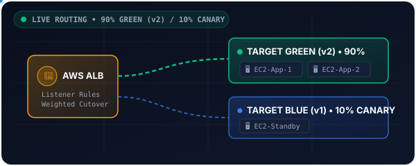

AWS Blue-Green Deployment
Implemented an AWS Blue-Green Deployment lab using an Application Load Balancer. Explored running two application environments side by side, switching traffic between versions, and understanding safe releases and rollback strategies.
- Application Load Balancer weighted traffic switching
- Separate Target Groups for Blue and Green environments
- Health check validation before full release cutover
- Zero-downtime release workflow and instant rollback
AWS EC2
ALB
Target Groups
Traffic Management
Blue-Green